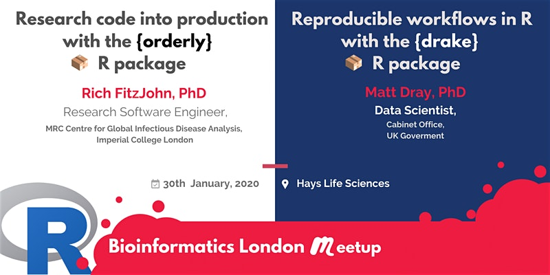

tl;dr
I spoke at the latest Bioinformatics London Meetup (event link, Twitter) about workflow reproducibility tools in R. I explained the benefits of Will Landau’s {drake} package for doing this.
Order, order
Rich FitzJohn opened proceedings with an excellent introduction to his {orderly} package (source) that is intended for ‘lightweight reproducible reporting’.
In short, the user declares inputs (anything, including things like SQL queries and CSV files) and artefacts (results) of their analysis. {orderly} loads what is declared, evaluates and runs what is necessary, and verifies that the declared artefacts are made. A bunch of metadata is stored alongside the analysis that can be used later to determine the source of any dependency changes.
I followed up with the basics of {drake}. My slides are in the following section.
We were also lucky to have a celebrity guest on the line: the creator of {drake}, Will Landau, who said some words about the package’s development and took questions. Will was also able to extend gratitude to Rich for having developed {remake}, a workflow manager for R that was a precursor to the development of {drake}.
Slides
You can open the slides in a dedicated tab (press P for presenter notes) or see the source. The slides introduce the idea of a workflow manager to improve reproducibility and how {drake} can fill that gap.
The second half of the presentation contains a small and simple demonstration of {drake} in action using R’s excellent built-in beaver-temperature datasets.
Bonus reproducibility: the {drake} analysis takes place in the slides themselves and is recreated from scratch when they’re regenerated. This is made possible by {xaringan}, Yihui Xie’s package for reproducible presentations.
I also created a single file containing the code that was run in the slides.
Click for the {drake} code.
# Reproducible workflows with {drake}
# Bioinformatics London Meetup, 2020-01-30
# This is a script file containing the code from the talk slides
# Source: github.com/matt-dray/drakebioinformatics
# Slides available here: matt-dray.github.io/drake-bioinformatics/
# Packages ----------------------------------------------------------------
# All available from CRAN with install.packages()
library(drake)
library(dplyr)
library(ggplot2)
library(rphylopic) # get CC0 organism graphics
# Functions ---------------------------------------------------------------
# Simple beaver plot
b_plot <- function(data, image) {
ggplot(data, aes(id, temp)) +
geom_boxplot() +
labs(title = "Beaver temperature") +
add_phylopic(image)
}
# Simple beaver summary table
b_table <- function(data) {
beavers_trim <- data %>%
group_by(id) %>%
summarise(
mean = mean(temp), sd = sd(temp),
min = min(temp, max = max(temp))
) %>% ungroup()
return(beavers_trim)
}
# Plan --------------------------------------------------------------------
# Wrap analysis steps in drake_plan()
plan <- drake_plan(
# 1. Wrangle data
b1 = mutate(beaver1, id = "A"), # built-in dataset
b2 = mutate(beaver2, id = "B"), # built-in dataset
beavers = bind_rows(b1, b2),
# 1. Get phylopic image
uid = "be8670c2-a5bd-4b44-88e8-92f8b0c7f4c6",
png = image_data(uid, size = "512")[[1]],
# 3. Generate outputs
# The .Rmd is avaiable from github.com/matt-dray/drake-bioinformatics
plot = b_plot(beavers, png),
table = b_table(beavers),
report = rmarkdown::render(
knitr_in("beavers-report.Rmd"), # note knitr_in()
output_file = file_out("beaver-report.html"), # note file_out()
quiet = TRUE
)
)
# Make --------------------------------------------------------------------
drake::make(plan) # executes the analysis steps in the plan
# Inspection --------------------------------------------------------------
# Get cached objects
cached() # check what's in the cache
readd() # return an object from the cache
# Create network graph
config <- drake_config(plan) # make a configuration file for the plan
vis_drake_graph(config) # build an interactive network graph using the config
# Make changes ------------------------------------------------------------
# Let's say something in your workflow changed. What is now out of date?
outdated() # prints the targets that are out of date
vis_drake_graph(config) # rebuild grpah to see impacted targets coloured black
drake::make(plan) # re-make the plan!Environment
Session info
Last rendered: 2023-07-22 16:20:16 BSTR version 4.3.1 (2023-06-16)
Platform: aarch64-apple-darwin20 (64-bit)
Running under: macOS Ventura 13.2.1
Matrix products: default
BLAS: /Library/Frameworks/R.framework/Versions/4.3-arm64/Resources/lib/libRblas.0.dylib
LAPACK: /Library/Frameworks/R.framework/Versions/4.3-arm64/Resources/lib/libRlapack.dylib; LAPACK version 3.11.0
locale:
[1] en_US.UTF-8/en_US.UTF-8/en_US.UTF-8/C/en_US.UTF-8/en_US.UTF-8
time zone: Europe/London
tzcode source: internal
attached base packages:
[1] stats graphics grDevices utils datasets methods base
loaded via a namespace (and not attached):
[1] htmlwidgets_1.6.2 compiler_4.3.1 fastmap_1.1.1
[4] cli_3.6.1 tools_4.3.1 htmltools_0.5.5
[7] xaringanExtra_0.7.0 rstudioapi_0.15.0 yaml_2.3.7
[10] rmarkdown_2.23 knitr_1.43.1 jsonlite_1.8.7
[13] xfun_0.39 digest_0.6.33 rlang_1.1.1
[16] evaluate_0.21 Reuse
CC BY-NC-SA 4.0